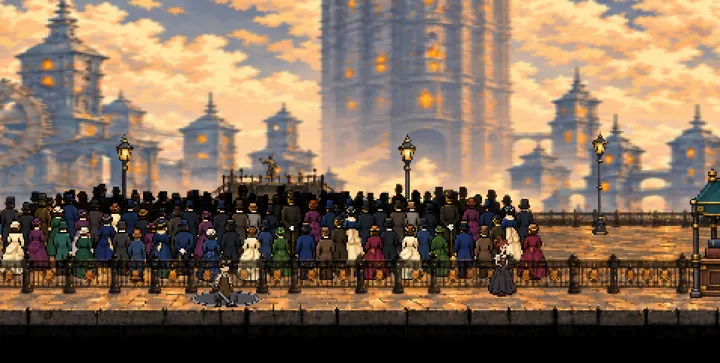

Unity 6 · C#
SteamHeart
쓰러진 할아버지의 기계 심장을 되살릴 코어를 찾아 도시의 하층에서 상층으로 올라가는 2D 사이드뷰 액션 어드벤처입니다.
- 담당
- 게임 프로그래밍 전체 · UI 제작(AI 활용)
- 제작
- 4인 팀 · 기획 제외 약 3개월
최종 보스의 동시 공격과 중단 처리
최종 보스의 손 네 개와 링을 별도 공격 부위로 관리하고, 패턴마다 사용할 부위를 예약했습니다. 주요 패턴에 필요한 부위가 기본 공격 중이면 그 공격이 끝날 때까지 기다립니다. 서로 다른 부위는 동시에 공격할 수 있습니다.
공격이 끝나거나 중단되면 해당 패턴의 피해 판정을 멈추고, 경고 표시와 공격 연출을 정리한 뒤 예약을 해제합니다. 다른 부위에서 진행 중인 공격은 그대로 이어집니다.
재현 테스트 · 영상 3.57초에서 한 손의 광선을 강제로 중단했습니다. 그 광선이 사라진 뒤에도 다른 손의 광선은 계속 발사됐습니다.
광선 중단 전후 비교


사망 후에도 이어지는 성장
보스를 쓰러뜨리지 못한 도전에서도 다음 전투를 준비할 수 있도록, 한 번의 도전에서만 쓰는 상태와 계속 쌓이는 진행도를 분리했습니다.
플레이어가 쓰러지면 처리장 입구로 돌아갑니다. 체력은 최대치로 회복되고 무기 단계는 초기화됩니다. 모은 고철과 제작대에서 구매한 영구 강화는 다음 도전에도 유지됩니다.
- 보유 고철
- 50 → 50
- 공격력 강화
- +1 → +1
- 무기 단계
- 1 → 0
팀 결과물과 크레딧
팀 석복동은 타이틀을 포함한 8개 씬과 2종의 보스를 완성했습니다. 게임은 하층에서 상층으로 이어지고, 컷신을 통해 이야기를 전달합니다.
- 최준이
- 게임 프로그래밍 전체 · UI 제작(AI 활용) · 레벨 구현 및 연출 적용
- 전진범
- 총괄·기획, 아트, 사운드 디렉팅
- 임경섭
- 기획·사운드 디자인
- 최지환
- 스토리보드·편집
